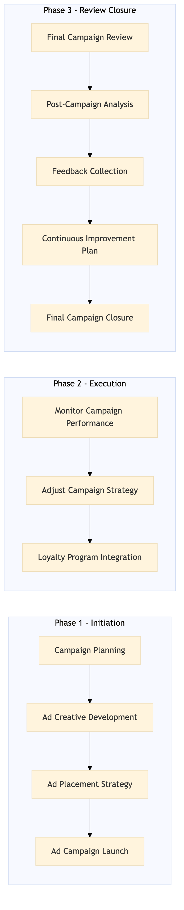

This process document outlines the management of the Co-op Advertising Programme, focusing on collaboration between OTA and TMC systems to optimize marketing efforts and enhance loyalty programs.
| Trigger | Initiation of a new co-op advertising campaign or review of existing campaigns |
| Outcome | Successful execution of the co-op advertising program leading to increased brand visibility, higher engagement rates, and improved customer satisfaction metrics. |
| Systems | Expedia Open World Partner Central Amadeus NDC Sabre GDS Travelport EVC One Key TravelAds AWS SageMaker Snowflake Kafka Salesforce Tableau SAP Concur T2 SAP Concur Expense Amex GBT Neo/Complete International SOS Cvent Amex Corporate Card VCN SAP Analytics Cloud Workday |

Click to enlarge
| Step | Name & Pain Point | Role | System | Input | Output | KPI | Flags |
|---|---|---|---|---|---|---|---|
| 1.1 | Campaign Planning Resource allocation for campaign planning | Marketing Manager | Expedia Open World, Partner Central | Campaign objectives, target audience, budget | Campaign plan document | Campaign approval within 2 weeks | ◆ Decision |
| 1.2 | Ad Creative Development Meeting client's vision for ad creatives | Creative Designer | TravelAds, AWS SageMaker | Campaign plan document | Ad creative assets | Creative approval within 3 weeks | ◆ Decision |
| 1.3 | Ad Placement Strategy Optimizing ad placements for maximum reach | Media Planner | Amadeus NDC, Sabre GDS, Travelport | Campaign plan document, ad creative assets | Ad placement strategy document | Placement strategy approval within 4 weeks | ◆ Decision |
| 1.4 | Ad Campaign Launch Smooth integration of ads across multiple platforms | Campaign Manager | Expedia Open World, Partner Central, Amex GBT Neo/Complete | Ad placement strategy document | Launched campaign in respective platforms | Campaign launch within 5 weeks | ◆ Decision |
| 1.5 | Monitor Campaign Performance Real-time analytics for quick decision-making | Analytics Specialist | Snowflake, Kafka, Salesforce, Tableau | Launched campaign data | Performance report | Daily performance monitoring | ◆ Decision |
| 1.6 | Adjust Campaign Strategy Balancing budget and performance optimization | Campaign Manager | Expedia Open World, Partner Central, Amex GBT Neo/Complete | Performance report | Adjusted campaign strategy document | Strategy adjustments within 7 days of performance review | ◆ Decision |
| 1.7 | Final Campaign Review Comprehensive evaluation of campaign impact | Marketing Manager | Expedia Open World, Partner Central | Adjusted campaign strategy document | Campaign review report | Campaign review within 8 weeks of launch | ◆ Decision |
| 1.8 | Post-Campaign Analysis Detailed insights for future campaigns | Analytics Specialist | Snowflake, Kafka, Salesforce, Tableau | Final campaign data | Post-campaign analysis report | Analysis completion within 9 weeks of launch | ◆ Decision |
| 1.9 | Loyalty Program Integration Ensuring seamless user experience across platforms | Loyalty Manager | SAP Concur T2, SAP Concur Expense, Amex GBT Neo/Complete | Campaign review report | Integrated loyalty program document | Integration within 10 weeks of launch | ◆ Decision |
| 1.10 | Feedback Collection Gathering actionable insights from customers | Customer Experience Manager | SAP Analytics Cloud, Workday | Integrated loyalty program document | Customer feedback report | Feedback collection within 11 weeks of launch | ◆ Decision |
| 1.11 | Continuous Improvement Plan Developing strategies for long-term success | Marketing Manager | Expedia Open World, Partner Central | Customer feedback report | Continuous improvement plan document | Improvement plan within 12 weeks of launch | ◆ Decision |
| 1.12 | Final Campaign Closure Proper archiving and documentation | Campaign Manager | Expedia Open World, Partner Central, Amex GBT Neo/Complete | Continuous improvement plan document | Closed campaign in respective platforms | Campaign closure within 13 weeks of launch | ◆ Decision |